Overview
Each input is a glass plate with three exposures stacked top to bottom: blue, green, then red. I split the image into three equal parts, align G and R to B with (x, y) translations, and stack them into an RGB image.
Everything is converted to floats first, and I shift with
np.roll. The green and red displacements are listed
under each result.
Single-Scale Alignment (L2 / MSE)
For the low-res jpgs I search every displacement in [-15, 15]. At each (x, y) I roll the channel and score how well it matches blue.
I used MSE, the mean of (image1 - image2)2. That's
proportional to the L2 / Euclidean distance from the spec,
sqrt(sum(sum((image1-image2).^2))). MSE just skips the
square root and divides by the number of pixels. Neither of those
changes which shift wins, so minimizing MSE is the same as minimizing L2.
I score on interior pixels only, cropping by the window size, because
np.roll wraps pixels around and that would throw off the
error. This was enough for cathedral, monastery, and tobolsk.


Multi-Scale Pyramid (L2 / MSE)
On the full-size tifs the true offset is often much larger than 15 pixels, and searching a huge window at full resolution is too slow. I used an image pyramid instead: run the same L2/MSE search on a smaller version first, then refine as you go back up to full size.
I downsample by 2 with anti-aliasing until both dimensions are under 256, search [-15, 15] there, then recurse back up. At each finer level I take 2× the coarse offset and only search ±5 around it. Still L2/MSE on pixel values, still ignoring borders. The offsets below are at full resolution.
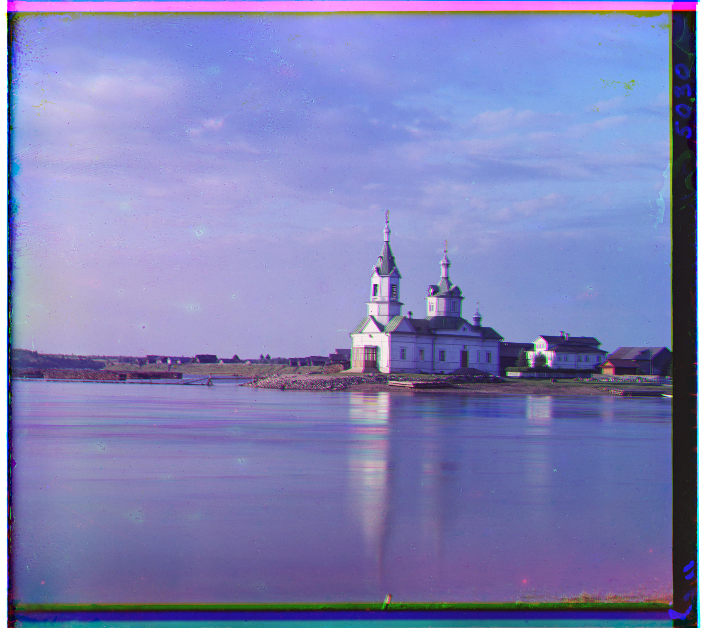
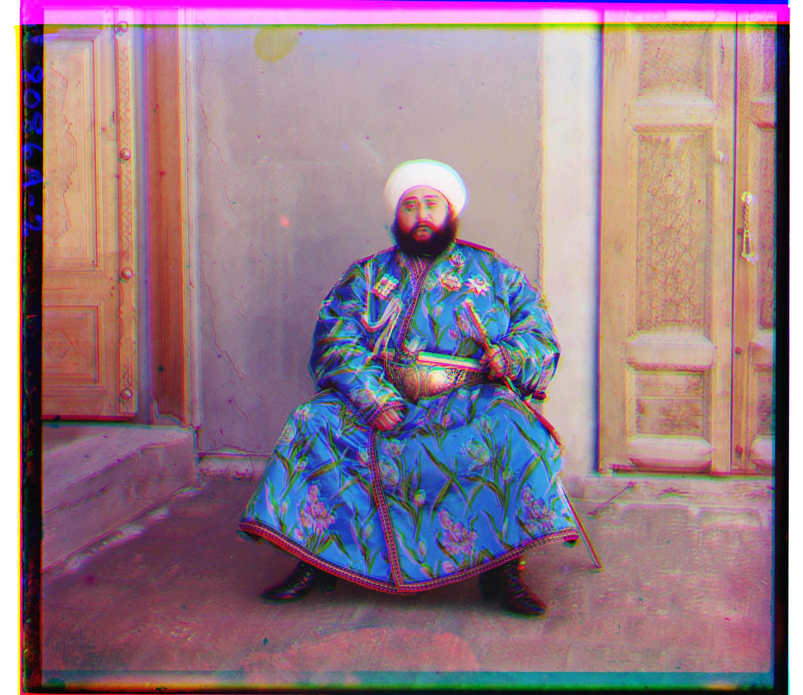
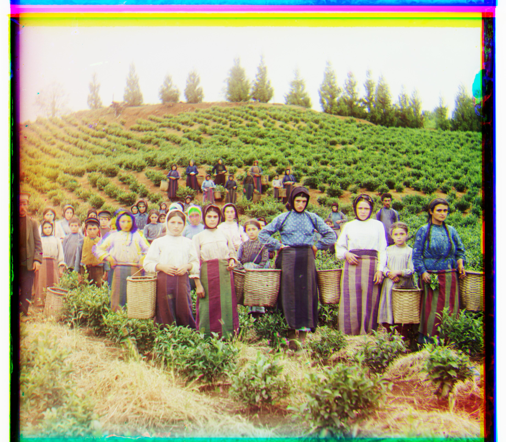
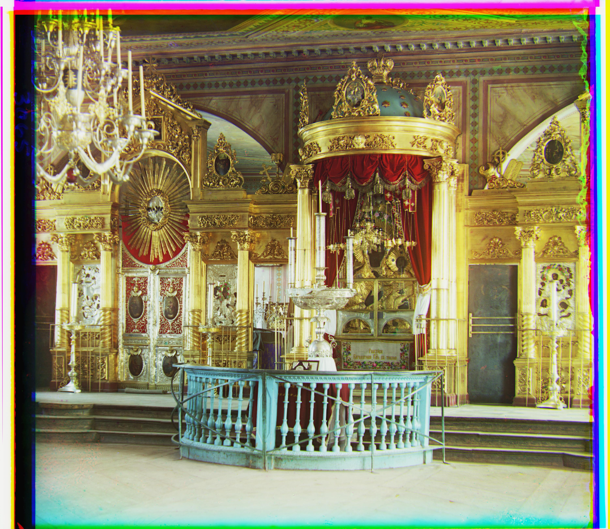

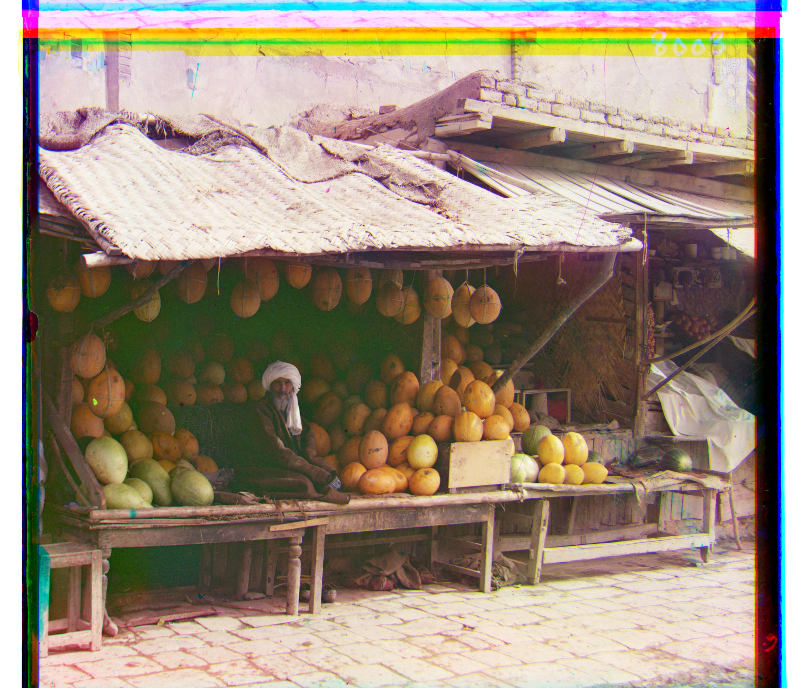

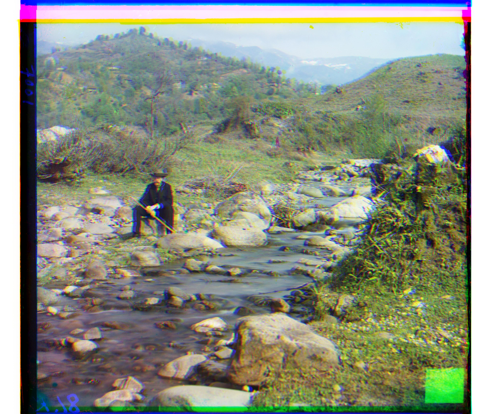
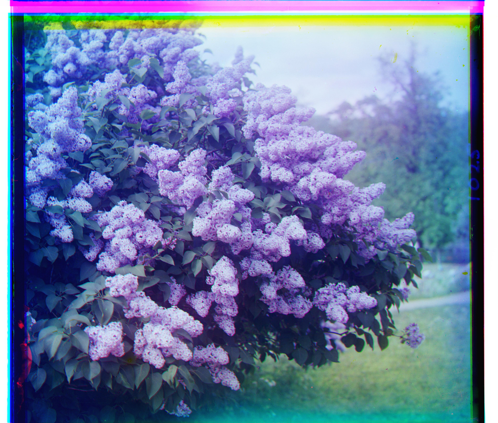
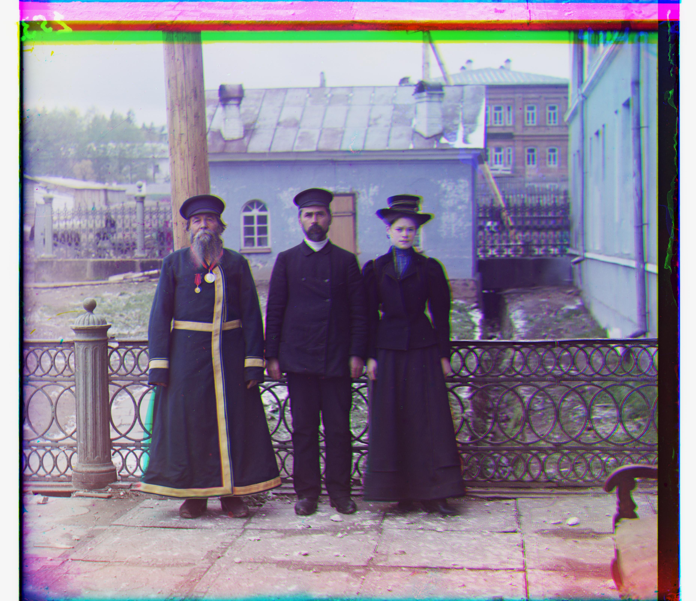

Images of My Choosing
I also ran the same pyramid alignment on three extra images from the Prokudin-Gorskii collection.
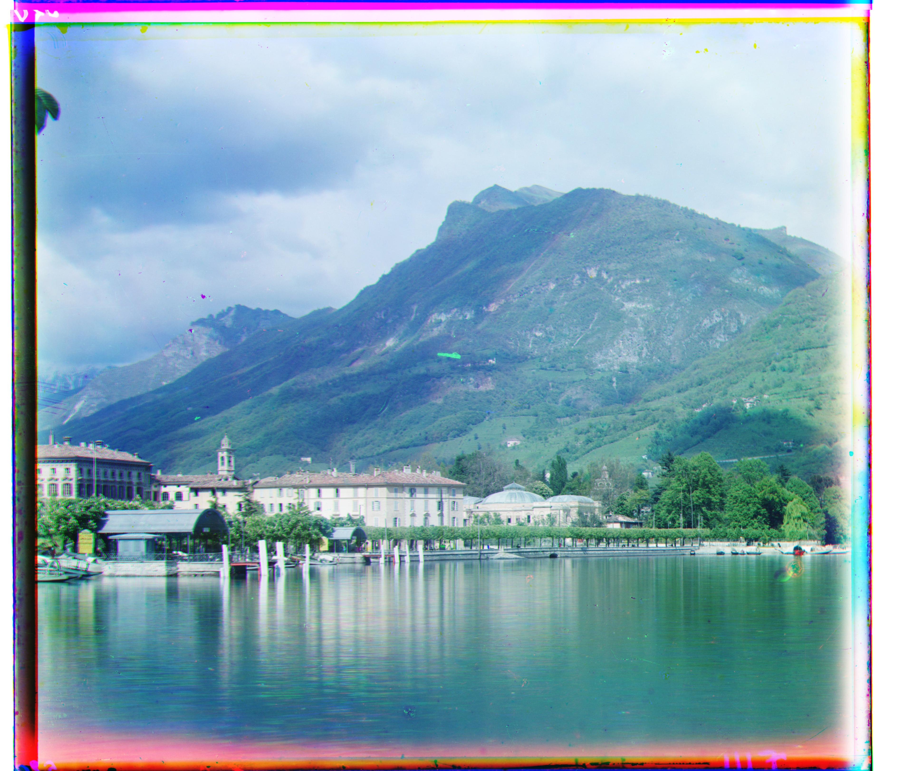
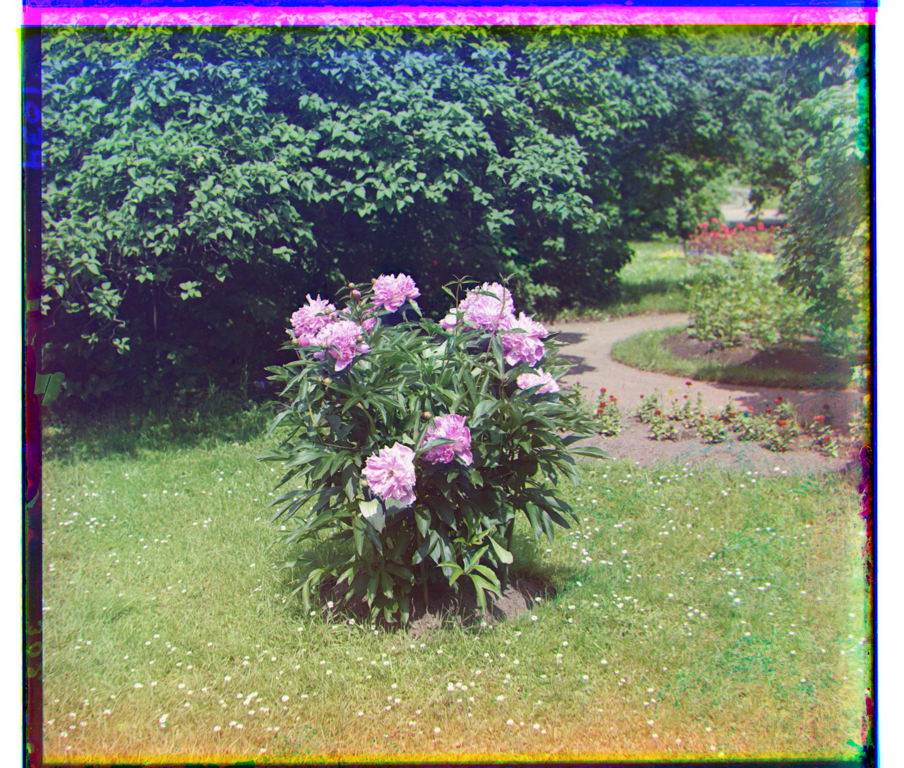
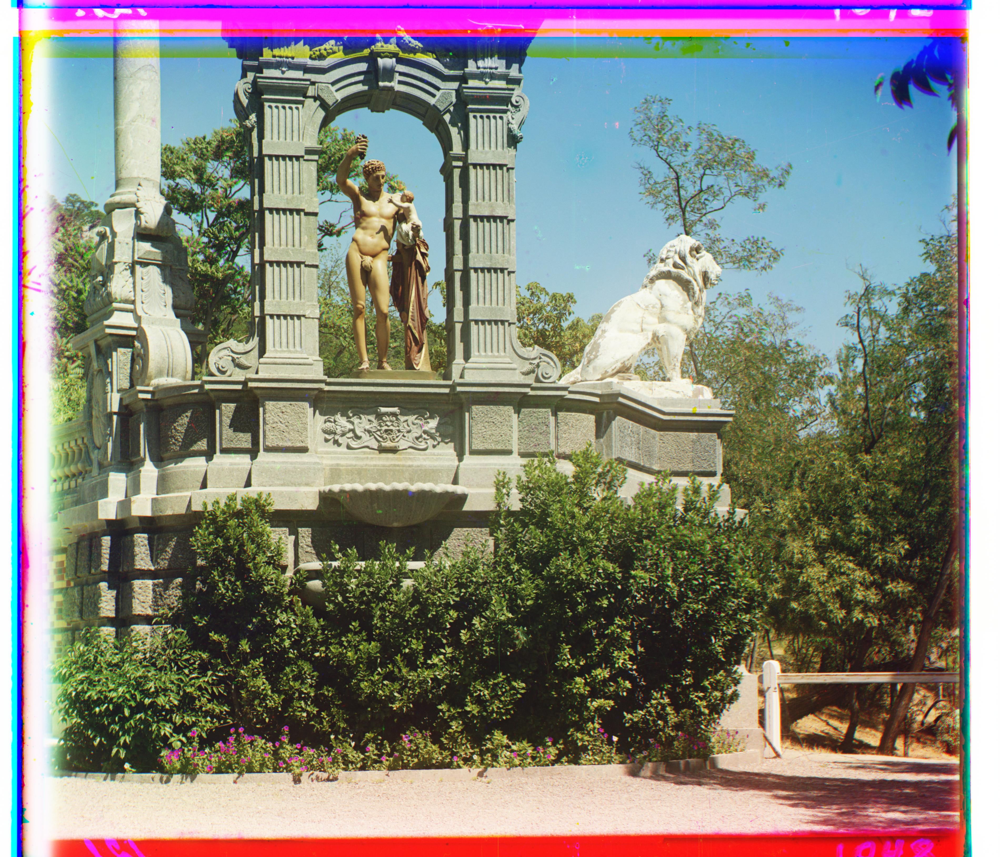
Failures and Lessons
Emir didn't align well. The robe is very bright in blue and dark in red, so L2 on raw pixels thinks the channels don't match even when the structure lines up. The spec calls this out. Using edges or gradients instead of brightness would probably help.